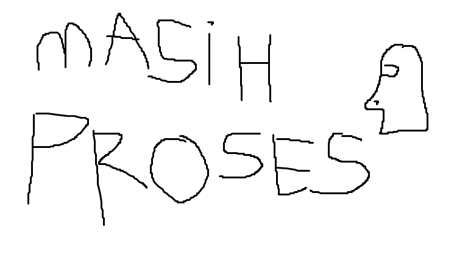

Segera Hadir
Kami sedang bekerja keras untuk fitur ini. 🗿

Update 1.1
- UI/UX yang lebih baik dan modern.
- Lebih mudah dipakai karena versi sebelumnya terlalu rumit.
- Konten berdiri sendiri.
- Akan hadir fitur Kas.